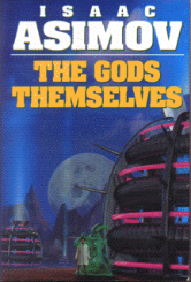

The Gods Themselvesby Isaac Asimov
publisher: Bantam Spectra
Fiction, 288 pages | 
(book cover art, Copyright ©1972 Isaac Asimov)
Used with Permission. |
Return to the Book MenuPrevious|Next
Description:
Mankind suddenly discovers a source of unlimited power - a trade of materials with "para-men," beings from a parallel universe. But is this exchange a safe one, or does it spell disaster for mankind's universe? A minority of inhabitants from both realms are worried and racing for an answer. A story in three very different parts.
Recommended for: people interested in how the scientific method is sometimes subverted, unusual alien life forms and their culture, and what life is like on the moon!
Did-you-read questions:
Deadline: February 1, 2005.
These should be easy questions, but you should have the questions ready and keep an eye out during your reading. Each question should be answered with 1-2 sentences.
Note: these questions are not probably not the most important part of the book! Your essay will not have to cover these questions!
- What is the title of the article written by Hallam that Lamont re-reads?
- What childhood taunting name does Dua later embrace?
- Who stole the food-ball?
- Why does Odeen never seem to meet Estwald?
- How to Lunarites prefer to dress when Earthies aren't around?
Report Questions:Deadline: Peer Review Session on February 8, 2005; paper due February 10, 2005.
You should write a 3 - 4 page essay on one of the following questions. Your essay should include examples and references to the book, unless otherwise specified. Page number references are sufficient for citing material from the primary book. If you use outside materials, cite your sources in full. If you would rather write on a different topic, you may, but clear it with Mr. Howe or Ms. Sullivan first.
- Although we barely get to meet him, Hallam is certainly a force to be reckoned with in scientific circles. Is he a follower of junk science?
- How do you think the triads of the parallel universe compare (or contrast) to couples that make up the majority of adult human relationships? In particular, how do the social interactions match or differ between these two cultures?
- With which of the three "Soft Ones" do you feel you best identify with?
- According to this story, what will life on the moon be like? Would you feel comfortable living there?
Graphic and Presentation:
Deadline: February 21 - March 3, 2005.You will give a 10 minute presentation on both of the following:
- Convince your peers that they should (or should not) read this book. (This may include a brief summary of the book.) Give examples of what was cool or worthwhile in the book, and what you got out of it (or didn't).
- Describe a (realistic) science idea that you learned about in this book, citing information from at least 2 external sources (other than the dictionary). If you would like help choosing or understanding an idea from your book, you are invited to come talk to Mr. Howe or Ms. Sullivan.
Note: This presentation should not be just a reading of your paper!Along with this presentation, you should have a graphic that will go with it. A Power Point presentation is recommended, but if you have a special idea for a something else, such as a model, an original video presentation, or a well done drawing/ painting/ sculpture/ etc., you may do so, provided it involves a similar level of effort and polish. Speak to Mr. Howe or Ms. Sullivan first if you are considering an alternate graphic format to the Power Point.
Return to the Book MenuPrevious|Next